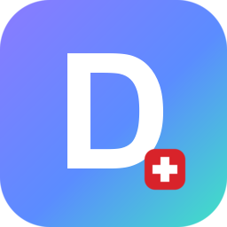

Klicken statt Taste halten
WannDeine Hand liegt sowieso auf der Maus.
VorteilEin Klick aufs Mikrofon, und Diktiv hört zu. Enter fügt den Text ein.

DiktivDu weisst, was du sagen willst. Diktiv tippt es für dich ins Mail, ins Dokument oder in den Chat. Die Erkennung läuft auf deinem PC.
Die Spracherkennung ist eingebaut. Deine Aufnahmen gehen an keinen Server. Diktieren klappt auch im Zug ohne Netz.
Genau im Feld, in dem du angefangen hast. Auch wenn du zwischendurch ein anderes Fenster anklickst.
Kein Abo, keine Anmeldung, keine Telemetrie. Du installierst Diktiv und kannst gleich diktieren.
Zu jeder Funktion steht, wann sie dir hilft und was du davon hast. Alles gehört zur Gratis-Version.
WannDeine Hand liegt sowieso auf der Maus.
VorteilEin Klick aufs Mikrofon, und Diktiv hört zu. Enter fügt den Text ein.
WannDu diktierst Namen, Produkte oder Fachbegriffe.
VorteilEinmal eintragen, damit Whisper sie richtig schreibt. So korrigierst du weniger nach.
Entstanden, weil Whisper den Namen des Entwicklers falsch schrieb.
WannDu brauchst einen Text von vorhin nochmals.
VorteilDoppelt antippen öffnet den Verlauf. Suchen, anklicken, und der Text ist wieder da, ohne ihn neu zu sprechen.
WannDir kommt mitten in der Arbeit eine Idee.
VorteilZweite Taste halten und den Gedanken aussprechen. Die Notiz liegt als Markdown-Datei in deinem Ordner.
Entstanden, weil dem Entwickler dauernd Ideen kommen, die er festhalten will.
WannDu arbeitest in Windows Terminal, PuTTY oder einer Electron-App.
VorteilDiktiv fügt so ein, wie das Programm es erwartet. Notfalls Zeichen für Zeichen.
WannDu schreibst für die Schweiz.
VorteilDiktiv schreibt ss statt ß. Du musst nichts von Hand ersetzen.
WannDu schreibst oft dieselbe Grussformel oder Adresse.
VorteilSignalwort und Name sagen, und der ganze Baustein steht da.
WannDu willst nicht, dass Diktate auf anderen Geräten landen.
VorteilDiktate tauchen nicht in Windows+V und nicht auf deinen anderen Geräten auf.
Entstanden, weil Diktate den Zwischenablageverlauf von Windows vollgestopft haben.
WannDu schreibst auch auf Englisch, Französisch oder Italienisch.
VorteilAn der Anzeige wechselst du die Sprache mit einem Klick. Auf Wunsch erkennt Whisper sie selbst.
Gemacht für kurze Nachrichten, Antworten und Gedanken im Alltag. Du weisst vor der Installation, was drin ist.
Du brauchst Windows 10 ab Version 1809 oder Windows 11 und ein Mikrofon. Eine Grafikkarte macht die Erkennung schneller, nötig ist sie nicht.
Zum Diktieren mit dem eingebauten deutschen Modell nicht. Internet brauchst du nur für die Installation und wenn du weitere Modelle dazulädst.
In das Eingabefeld, in dem du arbeitest, etwa in Word, Outlook, im Browser oder im Terminal.
Spracherkennung macht Fehler. Lies den Text durch, bevor du ihn verwendest. Diktiv ist kein Medizinprodukt.